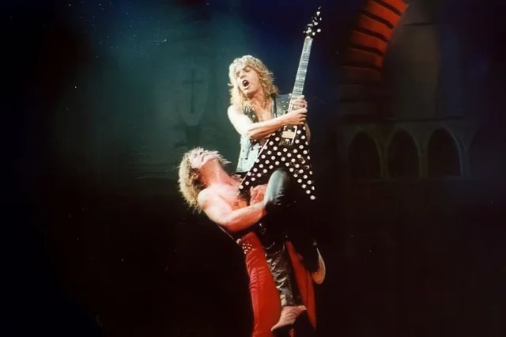

Bem vindos a página de fotos!
Aqui veremos também, algumas curiosidades sobre o artista!
Página inicial
-
 A imagem apresenta a coleção de guitarras icônicas de Randy Rhoads, lendário guitarrista conhecido por seu trabalho com Ozzy Osbourne e Quiet Riot. São quatro modelos distintos que marcaram sua carreira e estilo único. Da esquerda para a direita, vemos a Jackson Rhoads preta com detalhes dourados, famosa por seu visual agressivo e som potente; em seguida, a Jackson Rhoads branca com bolinhas pretas, um dos modelos mais emblemáticos associados à sua imagem; depois, a clássica Gibson Les Paul Custom creme, que reflete sua influência do rock clássico e blues; e, por fim, outra Jackson Rhoads, agora branca com detalhes pretos, demonstrando a inovação e personalização que Rhoads trouxe ao design das guitarras. Essa coleção não apenas representa sua habilidade técnica, mas também seu legado no mundo do rock e heavy metal. As guitarras são verdadeiros símbolos de sua criatividade, carisma e contribuição duradoura para a história da música.
A imagem apresenta a coleção de guitarras icônicas de Randy Rhoads, lendário guitarrista conhecido por seu trabalho com Ozzy Osbourne e Quiet Riot. São quatro modelos distintos que marcaram sua carreira e estilo único. Da esquerda para a direita, vemos a Jackson Rhoads preta com detalhes dourados, famosa por seu visual agressivo e som potente; em seguida, a Jackson Rhoads branca com bolinhas pretas, um dos modelos mais emblemáticos associados à sua imagem; depois, a clássica Gibson Les Paul Custom creme, que reflete sua influência do rock clássico e blues; e, por fim, outra Jackson Rhoads, agora branca com detalhes pretos, demonstrando a inovação e personalização que Rhoads trouxe ao design das guitarras. Essa coleção não apenas representa sua habilidade técnica, mas também seu legado no mundo do rock e heavy metal. As guitarras são verdadeiros símbolos de sua criatividade, carisma e contribuição duradoura para a história da música.
-

A imagem mostra um momento icônico do rock, com o lendário guitarrista Randy Rhoads sendo erguido nos ombros de Ozzy Osbourne durante uma apresentação ao vivo. Randy está empunhando sua famosa guitarra Jackson Flying V preta com bolinhas brancas, um de seus instrumentos mais característicos. A cena capta toda a energia, teatralidade e intensidade das performances da banda nos anos 80, refletindo o espírito explosivo do heavy metal da época. Randy, com sua presença marcante e habilidade técnica, era uma peça essencial na sonoridade e no visual das apresentações. Já Ozzy, com seu estilo extravagante e postura enérgica, completa o quadro de uma era dourada do rock. A imagem simboliza a conexão poderosa entre os dois músicos e o impacto que tiveram juntos no cenário musical. Este registro é mais do que uma simples fotografia de palco; é um tributo visual ao legado de Randy Rhoads, cuja influência ainda ressoa no mundo da guitarra e do metal.
-
 Na imagem, vemos Randy Rhoads em plena performance com sua icônica guitarra Jackson Flying V de bolinhas, provavelmente durante a execução de “Mr. Crowley”. Sua expressão intensa e postura mostram total entrega ao solo, um dos mais lendários do heavy metal. Ao fundo, os amplificadores Marshall e a bateria reforçam o clima clássico das apresentações ao vivo. A técnica e emoção de Randy nesse solo se refletem claramente na imagem, que captura o momento em que ele transforma habilidade em arte, solidificando seu legado como um dos maiores guitarristas da história.
Na imagem, vemos Randy Rhoads em plena performance com sua icônica guitarra Jackson Flying V de bolinhas, provavelmente durante a execução de “Mr. Crowley”. Sua expressão intensa e postura mostram total entrega ao solo, um dos mais lendários do heavy metal. Ao fundo, os amplificadores Marshall e a bateria reforçam o clima clássico das apresentações ao vivo. A técnica e emoção de Randy nesse solo se refletem claramente na imagem, que captura o momento em que ele transforma habilidade em arte, solidificando seu legado como um dos maiores guitarristas da história.
-
A imagem mostra Randy Rhoads tocando violão clássico, evidenciando seu profundo apreço pela música clássica, que influenciou fortemente sua abordagem na guitarra elétrica. Embora famoso pelo heavy metal, Randy estudou música clássica formalmente, e essa base técnica foi fundamental para seu estilo inovador. Ele incorporou elementos da música clássica, como escalas, arpejos e técnicas complexas, em seus solos de rock, criando um som único e sofisticado. A postura concentrada e o uso do violão nesta imagem revelam seu respeito pela tradição clássica e sua busca por excelência musical. Essa fusão entre o clássico e o rock foi uma das marcas registradas de Randy, elevando o heavy metal a um novo patamar de musicalidade. Sua influência perdura até hoje, inspirando guitarristas a explorarem o virtuosismo e a expressividade que a música clássica oferece, combinada com a energia do rock.